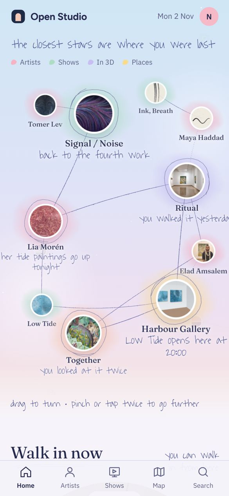
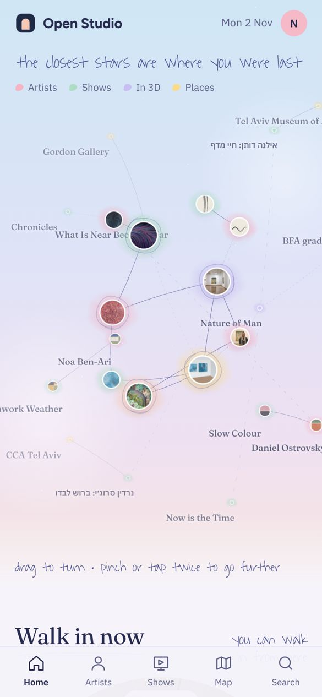
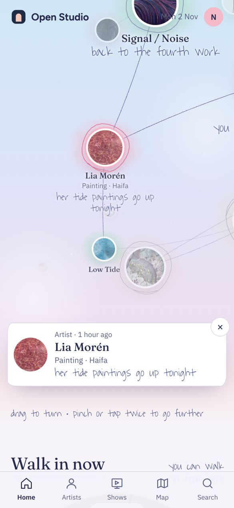
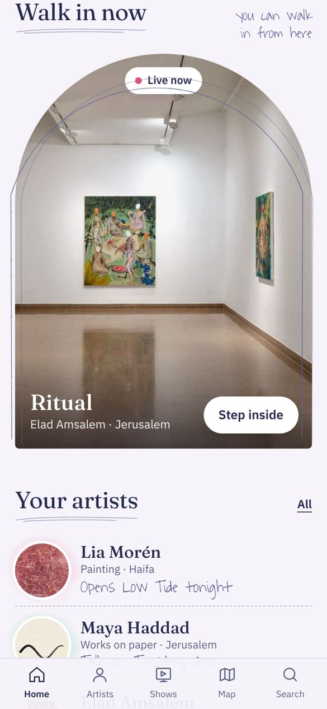

חיברתי בין שמי יום לנייר שקוף: השמיים בפסטל שמשתנים לפי השעה, הכוכבים בצבע של מה שהם, ועליהם היד של מחברת הסקיצות. קווי עיפרון בין הכוכבים, עיגולי עיפרון סביב המקומות שהיית בהם לאחרונה, כתמי צבעי מים מאחורי כל כוכב, וכל ההערות בכתב עיפרון. בלי Wander: הכול קורה בעמוד הבית עצמו.
גרירה הצידה מסובבת את השמיים
צביטה מתקרבת או מתרחקת
שתי אצבעות מזיזות את השמיים הצידה
הקשה כפולה מתרחקת אל הכוכבים הרחוקים, ועוד אחת חוזרת
לחיצה על כוכב פותחת אותו
בכניסה לעמוד השמיים נכנסים לאט מרחוק, כדי שיהיה ברור שיש עוד כוכבים מסביב.

השמיים

מתרחקים: מי שעוד לא פגשת

לחיצה על כוכב

הסיור, בקשת מעופרנת
שמי יום, ביד Daylight, by hand
הבסיס שבחרת. מה שלקחתי מכל אחד:
משמי יום: השמיים לפי השעה, הכוכבים הרחוקים באובך, הקווים שנמשכים מעצמם, הצבע לפי סוג הכוכב, וקשת הסיור
מנייר שקוף: העיפרון בקווים ובעיגולים, כתמי צבעי המים, כתב העיפרון, וה-"you" המוקף בקו יד
גם מתחת לשמיים: קו עיפרון מתחת לכל כותרת, קשת מעופרנת סביב הסיור, כתמי צבע מאחורי האמנים, וקווים מקווקווים